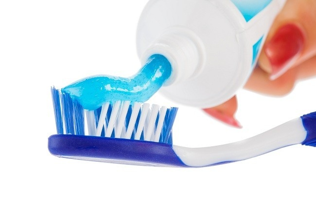

Nama :Berlian Dwi Putri
Nim :21104410084
Kelas :TI-B
Pasta Gigi

Pengertian Pasta Gigi
Pasta gigi adalah pasta yang diformulasikan menggunkan beberapa bahan untuk meningkatkan
kebersihan gigi.Pasta gigi digunkan dengan sikat gigi untuk membersihkan tempat-tempat yang tidak
dapat dicapai. Menyikat gigi dianjurkan dua kali sehari, yaitu sesudah makan dan sebelim tidur.
Pasta gigi yang digunkan pada saat menyikat gigi berfungsi untuk mengurangi pembentukan plak atau
stain, memperkuat perlindungan gigi terhadap karies, membersihkan dan memoles permukaan gigi,
menghilangkan atau mengurangi bau mulut, memberikan rasa segar pada mulut serta memelihara kesehatan gigi.
Cara Menggunkan Pasta Gigi
-
Perhatikan banyak pasta gigi. Untuk anak saat gigi pertama kali tumbuh sampaip usia 3 tahun,
menggunakan selapis tipis pasta gigi dan tidak lebih dari ukuran biji beras. Untuk anak usia 3-6 tahun,
berikan pasta gigi dengan ukuran sebesar kacang polong saja. Bagi anak-anak, pengunaan odol secara
berlebihan dapat mengganggu perkembanga gigi. Sementara itu bagi usia 6 tahun keatas hingga dewasa,
aplikasikan pasta gigi sepanjang bulu sikat.
-
Sikat gigi dengan cara yang benar. Sikatlah gigi selama minimal dua menit. Untuk memaksimalkan
kegunaan odol, sikat gigi sedikit demi sedikit dengan gerakan memutar dan bulu sikat menghadap 45 sudut
kearah gusi. Sikat bagian luar dan dalam gigi, serta permukaan kunyah gigi. Ingat juga untuk menyikat
lidah untuk mengusir bakteri dan membuat nafas lebih segar.
-
Jangan berkumur terlalu sering setelah sikat gigi. Pastikan Anda mempraktekkan cara memakai
pasta gigi yang benar dan cukup berkumur satu kali setelah sikat gigi. Keguanan pasta gigi untuk gigi
akan berkurang efectivitasnya jika berkumur terlau banyak karena kandungna floride yang seharusnya
dapat mencegah gigi rusak, malah terbungan bersama air.
-
Mengganti sikat gigi secara berkala. Cara memakai sikat gigi yang benar harus dipraktikan
dengan menggunkan sikat gigi yang berkualitas. Gantilah sikat gigi setidaknya tiga bulan sekali.
Sikat gigi yang tidak diganti dapat menjadi tempat bakteri berkembang biak dan berujung kepada infeksi
gigi. Selain itu,kualitas bulu sikat dan juga lam ketahanan akan menurun sehingga berpengaruh kepada
kemampuannya untuk membersihkan gigi.
-
Menyikat gigi 30 menit setelah makan. Menyikat gigi segera setelah makan tidak disarankan
karena sesaat setelah makan air liur mengandung kadar asam yang kebih tinggi. Jika langsung menyikat
gigi setelah makan, maka asam akan mengikis enamel lebih dalam. Idealnya, tunggulah 30 menit setelah
makan sebelum menyikat gigi agar bisa secara maksimal menikmati kegunaan psta gigi untuk gigi.